Precisa
Mede a torra, indica o perfil e explica o porquê. Sem promessas vagas.
Ponto Torrefação. Versão 1.0, outubro de 2026.
Projeto de demonstração. Marca, pessoas, contatos, produtos e preços são fictícios.
Precisão no ponto exato, com acolhimento para quem prepara o café em casa.
Para quem prepara café em casa com cuidado, a Ponto transforma a torra em precisão. Cada saco mostra a origem, o perfil de torra e uma receita que funciona na primeira tentativa.
Mede a torra, indica o perfil e explica o porquê. Sem promessas vagas.
Fala com quem está começando, sem tratar ninguém como quem não sabe nada.
Convida a comparar lotes e a descobrir o próprio ponto de torra.
Pretensiosos, técnicos demais ou nostálgicos de forma forçada. Nada de carimbo, papel kraft e frases de efeito sobre experiências sensoriais.
| Dizemos | Não dizemos |
|---|---|
| Torra média: caramelo, cacau e final doce. | Uma experiência sensorial inesquecível. |
| Moa na hora e use 15 g para cada 250 ml de água. | Sinta-se livre para experimentar! |
| Não sabe por onde começar? Comece pela torra média. | Descubra o universo do café. |
| Este lote tem notas de ameixa. Você vai reconhecer. | Um café revolucionário para o seu dia. |
A marca é uma escala de torra com o ponto marcado.
Ponto é o instante em que o grão termina a torra. Toda a identidade parte dessa ideia: medir com cuidado e escolher o momento certo.
O símbolo nasce da escala de torra usada nas embalagens e no site. Quando a marca cresce, o ponto pode aparecer sozinho, como marcador de destaque.
Um símbolo e uma palavra. A palavra é “ponto” em Fraunces, convertida em curvas, para que o arquivo não dependa de fontes instaladas.
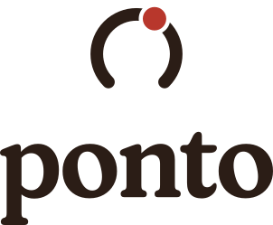
Mantenha livre a distância x em todos os lados. O x equivale ao diâmetro do ponto do símbolo, cerca de 22% da altura do logotipo.
| Versão | Digital | Impresso |
|---|---|---|
| Principal | 120 px de largura | 30 mm de largura |
| Vertical | 96 px de largura | 24 mm de largura |
| Logotipo | 96 px de largura | 24 mm de largura |
| Símbolo | 24 px de altura | 6 mm de altura |
Estas combinações não são aprovadas.
Cinco cores de base, uma escala de torra e um acento. A paleta sai do café: o verde do grão cru, a cereja, a torra e a casca fina do grão.
Texto e fundos escuros.
Fundo principal.
Destaque, ações e o ponto.
Destaque sobre fundos escuros.
Embalagens e blocos de cor.
Textos de apoio e detalhes.
Texto secundário.
| Par (texto sobre fundo) | Razão | Uso |
|---|---|---|
| Torra sobre Pergaminho | 13,97:1 | Texto em qualquer tamanho (AAA) |
| Pergaminho sobre Torra | 13,97:1 | Texto em fundos escuros (AAA) |
| Torra sobre Mel | 7,24:1 | Destaques e botões (AAA) |
| Torra sobre Verde Café | 10,37:1 | Texto sobre embalagens (AAA) |
| Verde Folha sobre Pergaminho | 6,05:1 | Texto de apoio (AA) |
| Cacau sobre Pergaminho | 5,45:1 | Texto secundário (AA) |
| Pergaminho sobre Cereja | 4,98:1 | Botões e textos (AA) |
| Cereja sobre Pergaminho | 4,98:1 | Destaques e o ponto (AA) |
| Cacau sobre Verde Café | 4,04:1 | Somente texto grande (AA para texto grande) |
| Cereja sobre Torra | 2,81:1 | Não usar, nem em texto nem em gráfico |
| Mel sobre Pergaminho | 1,93:1 | Não usar como texto nem como informação gráfica |
| Mel sobre Verde Café | 1,43:1 | Não usar |
Razões calculadas pela fórmula WCAG 2.x. AA exige 4,5:1 para texto normal e 3:1 para texto grande e gráficos. AAA exige 7:1 para texto normal. O pergaminho claro, #FBF8F2, é tom de superfície para cards e blocos. Não é cor de marca.
Os valores CMYK são conversões aproximadas, para referência. Faça prova de cor com a gráfica antes de imprimir. Esta identidade não define Pantone: se o cliente pedir, meça o catálogo físico na fase de produção.
Fraunces dá personalidade aos títulos. Instrument Sans organiza textos, interfaces e legendas.
Títulos, destaques e logotipo. Peso 600, com SOFT 100 e WONK 0.
ABCDEFGHIJKLMNOPQRSTUVWXYZ abcdefghijklmnopqrstuvwxyz 0123456789 ÁÉÍÓÚÂÊÔÃÕÇ
Textos, interfaces, legendas e embalagens. Pesos 400 e 600.
ABCDEFGHIJKLMNOPQRSTUVWXYZ abcdefghijklmnopqrstuvwxyz 0123456789 ÁÉÍÓÚÂÊÔÃÕÇ
| Nível | Família e peso | Tamanho e entrelinha | Uso |
|---|---|---|---|
| Display | Fraunces 600 | 72 / 76 px | Capas e títulos principais. |
| Título 2 | Fraunces 600 | 49 / 54 px | Títulos de seção. |
| Título 3 | Fraunces 600 | 31 / 36 px | Subtítulos e títulos de cartão. |
| Título 4 | Fraunces 600 | 25 / 30 px | Títulos de item e de produto. |
| Lead | Instrument Sans 400 | 20 / 30 px | Introdução de página e de seção. |
| Corpo | Instrument Sans 400 | 16 / 26 px | Textos corridos, descrições e formulários. |
| Rótulo | Instrument Sans 600 | 14 / 20 px | Rótulos, categorias e botões. |
| Legenda | Instrument Sans 400 | 13 / 18 px | Legendas, créditos e notas. |
Um café para quem está começando a comparar lotes e quer acertar na primeira xícara.
Cada saco traz a origem, o perfil de torra e uma receita de preparo. O corpo de texto fica em 16 px, com entrelinha de 26 px.
Legenda: altitude, variedade e data de torra.Elementos que se repetem em todas as peças e dão ritmo à marca.
A escala é o módulo principal da marca. Cinco níveis, do Claro ao Escuro, com o preenchimento progressivo mostrando a intensidade da torra. Use-a como informação de apoio em embalagens, cartões e no site.
Textura de apoio para fundos lisos, como capas de sacos e posts. Não coloque a malha atrás de texto corrido.
Caramelo, cacau e final doce.
Em listas e destaques, o marcador é um ponto Cereja, a mesma forma do ponto da marca. Ele substitui bolinhas e travessões.
Grade de 12 colunas, calha de 24 px, margens de 64 px no desktop e 24 px no celular, com largura máxima de 1200 px. Os espaços seguem a escala de 8 px.
As superfícies são tonais: use Pergaminho claro sobre Pergaminho, ou Verde Café sobre Pergaminho. Não use sombras.
Seis ícones em traço de 1,6 px, sobre grade de 24 px, com cantos arredondados. A cor padrão é Torra. Use Cereja para um único destaque por peça.
Luz lateral natural, de janela. Sombras suaves e contraste baixo.
Madeira escura, grão em macro e mãos em ação. Fundo Pergaminho ou Torra.
Baristas de banco de imagem, sorrisos forçados e produto sobre fundo branco.
Traço simples, de 1,6 px, sem preenchimento e com cantos arredondados. A ilustração ocupa o lugar da fotografia quando o assunto é processo, nunca decora o texto. Para processos, use a escala de torra como fio condutor.
A marca aplicada nas peças que o cliente usa no dia a dia.
Cada peça abaixo é uma exportação das aplicações em aplicacoes/index.html. Os arquivos em PNG ficam em aplicacoes/png/.
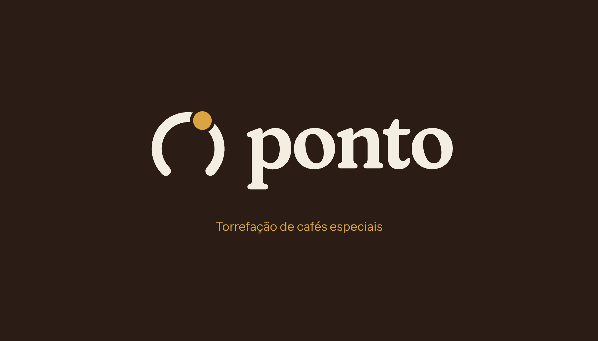
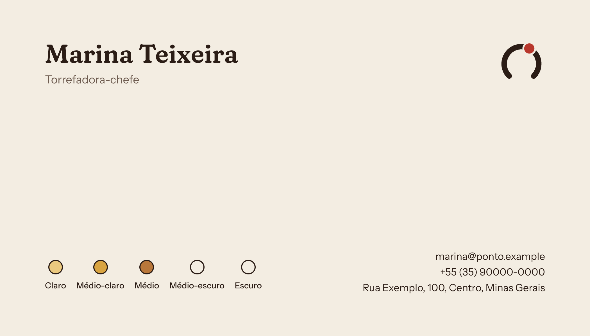
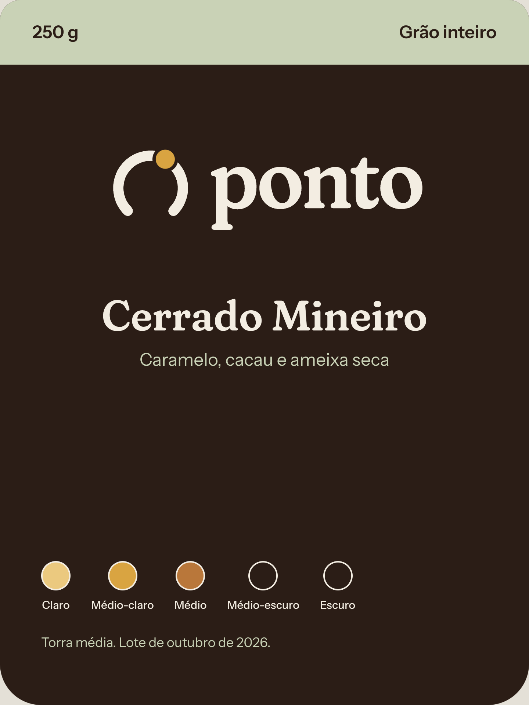
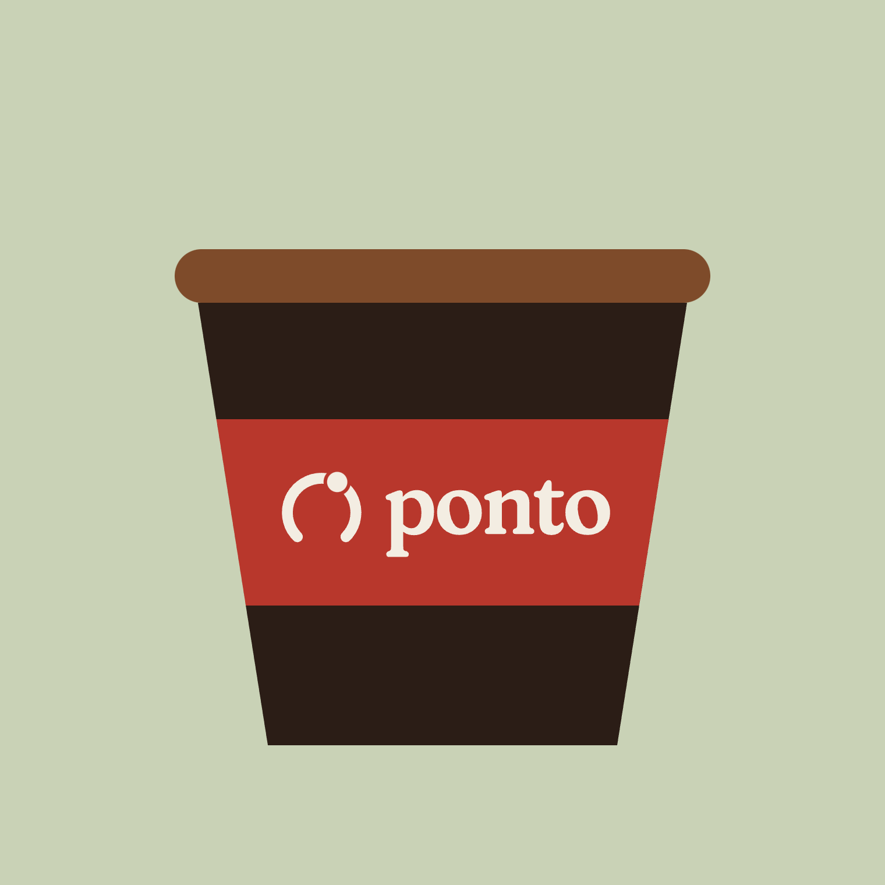
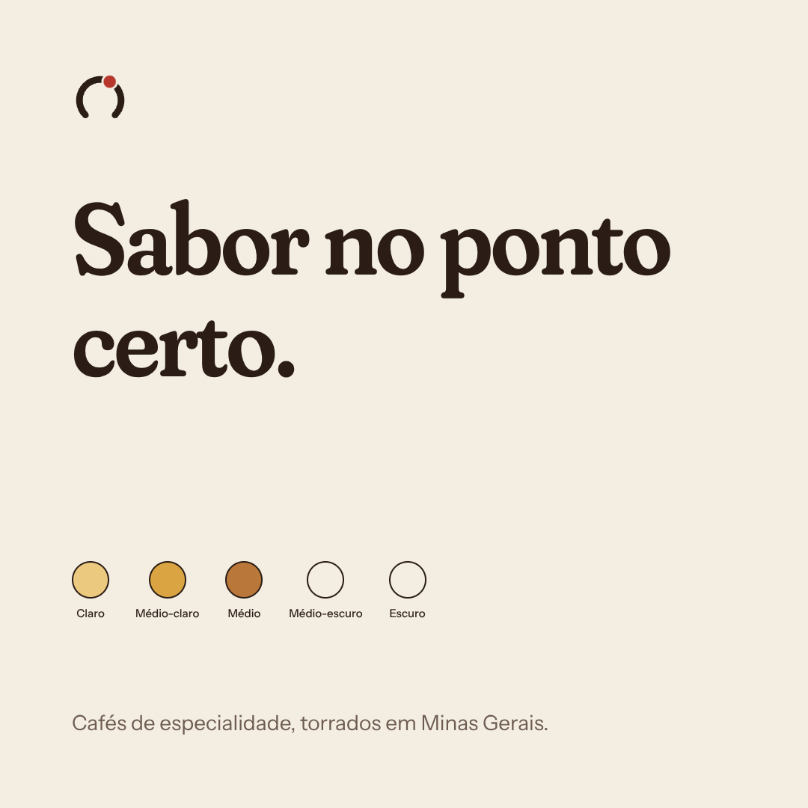
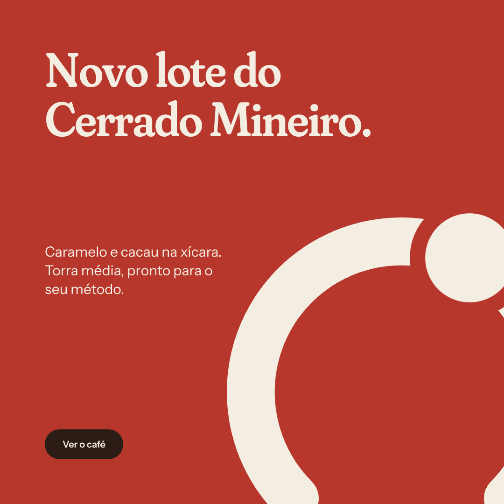
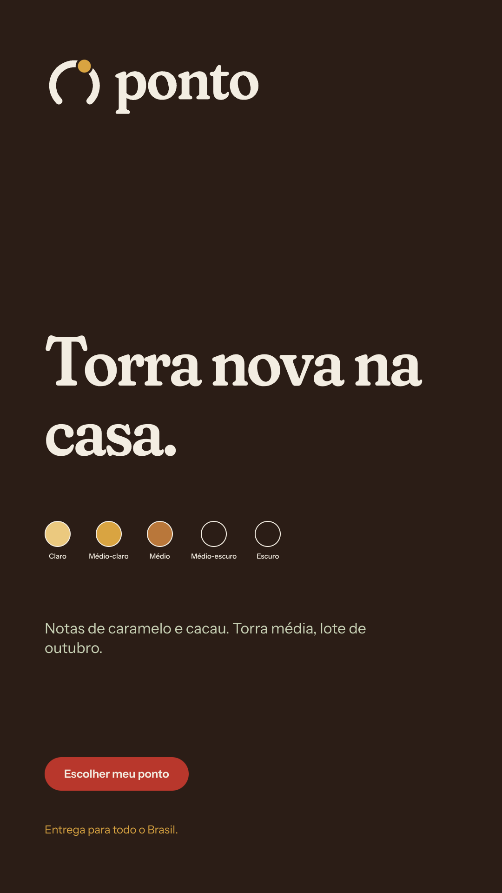
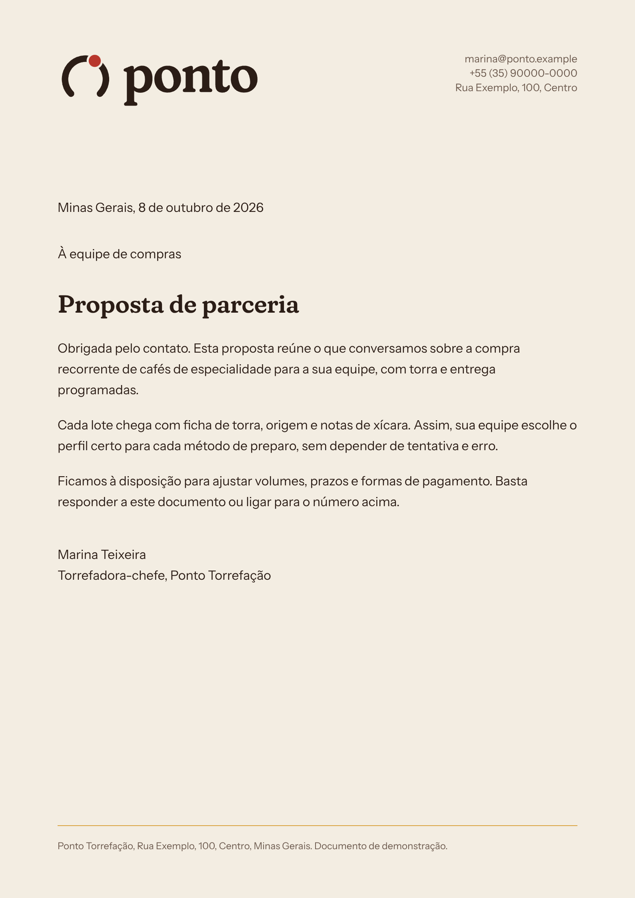
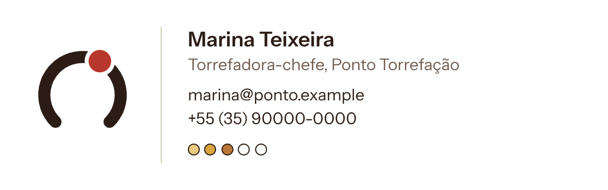
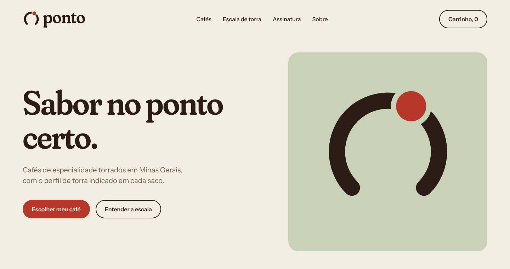
Os mesmos valores do manual, em formato para desenvolvimento e para produto digital.
| Arquivo | Para que serve |
|---|---|
DESIGN.md | Fonte dos tokens, no formato DESIGN.md. Cores, tipografia, raios, espaços e componentes. |
tokens/tokens.css | Variáveis CSS geradas a partir do DESIGN.md, com prefixo ponto. |
brand/brand.css | Estilos de referência, usados neste manual e no site. |
:root {
--ponto-color-torra: #2b1d16;
--ponto-color-pergaminho: #f3ede2;
--ponto-color-cereja: #b8372c;
--ponto-color-mel: #d9a441;
}# Validar o DESIGN.md (0 erros esperados)
npx @google/design.md lint DESIGN.md
# Gerar as variáveis CSS
npx @google/design.md export --format css-vars --prefix ponto DESIGN.md > tokens/tokens.cssO que está pronto nesta versão, onde está cada arquivo e o que ainda depende do cliente.
| Item | Onde está | Formato |
|---|---|---|
| Logotipo, 10 variações | logo/ e logo/png/ | SVG e PNG de 2000 px |
| Paleta, escala de torra e contraste | DESIGN.md e tokens/ | Markdown e CSS |
| Tipografia e licenças | fontes/ | WOFF2, SIL OFL 1.1 |
| Estilos de referência | brand/brand.css | CSS |
| Aplicações, 9 peças, e home do site | aplicacoes/ e aplicacoes/png/ | HTML e PNG |
| Manual e site de demonstração | manual/ e site/ | HTML |
| Briefing, escopo e fases | briefing.md e ESCOPO.md | Markdown |